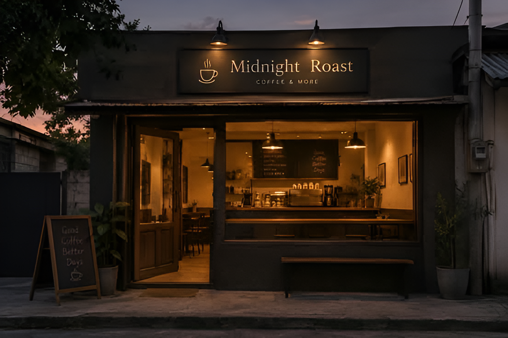

Our story
What began as a love for flavor has grown into a journey of sharing wines that speak to every occasion.
What began as a love for flavor has grown into a journey of sharing wines that speak to every occasion.

Midnight Roast opened as a small coffee shop tucked away in a quiet neighborhood. Known for its rich blends and late-night atmosphere, it quickly became a haven for students, artists, and professionals who sought comfort in a cup of coffee and conversation.
Partnerships with local diners and bookstores allowed Midnight Roast to extend its reach beyond its original shop. By offering signature brews in 24-hour establishments, the brand became synonymous with accessibility and reliability, always ready to serve those who needed energy at any hour.
Driven by curiosity and innovation, Midnight Roast introduced its first coffee-infused wine. This daring blend of roasted beans and grapes surprised customers and marked the beginning of the brand’s journey into winemaking. It was a turning point that hinted at a future beyond coffee.
Midnight Roast partnered with boutique vineyards to craft semi-sweet wines. These creations balanced the smoothness of coffee with the natural sweetness of grapes, appealing to both loyal coffee drinkers and adventurous wine enthusiasts.
The company invested in a new facility that housed both roasting and winemaking operations. This milestone symbolized the transformation of Midnight Roast from a neighborhood coffee shop into a hybrid café-winery, blending two worlds under one roof.
Midnight Roast unveiled its flagship wine collection: Espresso Merlot, Mocha Rosé, and Caramel Chardonnay. Each variant carried the essence of the brand’s coffee heritage while standing proudly as refined wines in their own right.
The brand began exporting to Southeast Asia, introducing its unique coffee-wine blends to Filipino communities abroad. Midnight Roast’s products sparked curiosity among international wine lovers, positioning the brand as a pioneer in fusion beverages.
Recognizing the power of online platforms, Midnight Roast launched a strong digital presence. Through e-commerce and social media, the brand reached thousands of followers, transforming into a lifestyle symbol for those who embraced both coffee culture and wine sophistication.
Midnight Roast was honored as one of Asia’s most innovative beverage brands. Its success was attributed to its ability to bridge two distinct traditions—coffee and wine—while maintaining authenticity and creativity.
To cater to mindful drinkers and diverse celebrations, Midnight Roast launched Sparkling Cold Brew Rosé. Made from premium grapes and infused with coffee essence, it offered a sophisticated, non-alcoholic option that embodied the brand’s commitment to inclusivity and innovation.
Midnight Roast stands today as a symbol of evolution—beginning as a humble coffee shop and growing into a winery that continues to push boundaries. Its journey reflects a dedication to craft, community, and the art of blending traditions into something entirely new.